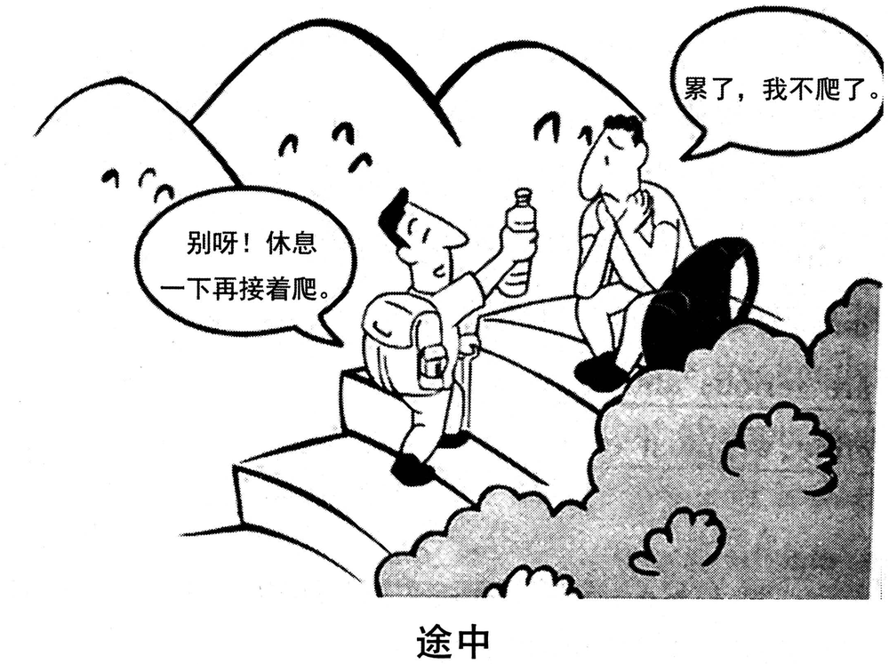

A小作文 · 以项目工作人员身份，答复一位国际学生志愿者的咨询（10 分）
Suppose you are working for the “Aiding Rural Primary Schools” project of your university. Write an email to answer the inquiry from an international student volunteer, specifying the details of the project.
You should write about 100 words on the ANSWER SHEET.
Do not use your own name in the email; use “Li Ming” instead. (10 points)
💭 审题三件事
- ⭐⭐ 第一句回应来信，第二句亮身份。Thank you for your email about the “Aiding Rural Primary Schools” project. As one of its coordinators, I am glad to answer your questions.——about the project 把他问的对象复述一遍；answer your questions 把题干的 answer the inquiry 落到纸上。项目名照抄、带引号、每个实词首字母大写。
- ⭐⭐ 替他列五个问题，每个答成一个能核对的值。做什么 ⟹ 教英语和音乐、带一个课后阅读社；何时何地 ⟹ 7 月 8 日至 8 月 2 日、青山小学、离学校三小时车程；语言 ⟹ 每位国际志愿者配一名中国学生；食宿 ⟹ 免费，条件简朴；下一步 ⟹ 6 月 20 日前回复、6 月 28 日培训。五件里至少写四件，一百词正好装下。
- ⭐ 乡村条件要说实话。though conditions are simple——rural 这个词最该回应的一句：对志愿者说实话是负责，比把村小写成度假营强；但别写穷、别煽情（孩子不是被同情的对象），一个 simple 就够。
⭐⭐ 十四年 Part A：2019 是第一封「回信」
| 年份 | 体裁 | 读者是谁 | 第一句怎么起 | 落款 | 本年特有的坑 |
|---|---|---|---|---|---|
| 2007 | 建议信 | 校图书馆（机构） | I am writing to put forward several suggestions … | Li Ming | 建议只有口号没有可执行动作；写成投诉信 |
| 2008 | 道歉信 | 具名熟人 Bob | I am writing to apologize for … | Li Ming | 只道歉不给方案；方案没有「动作＋方式＋时间」 |
| 2009 | 致编辑信 | 报社编辑 | I am writing to express my concern about … | Li Ming | 建议里没有一条是编辑自己能办的 |
| 2010 | 通知 NOTICE （招募） | 一群人（无称呼） | Volunteers are needed for … | 机构名 | 写 Dear ＝ 体裁错；落款签 Li Ming |
| 2011 | 推荐信 · 荐物 | 未具名的一个朋友 | How have you been? I am writing to recommend … | Li Ming | 写成影评／剧透结局；通篇只有「我」没有「你」 |
| 2012 | 欢迎邮件 （以组织名义） | 一群国际学生 但仍是书信 | On behalf of the Students’ Union, I would like to extend a warm welcome to … | Li Ming ＋ Students’ Union | 按 2010 的手感写成通知；通篇 I 没有 we |
| 2013 | 邀请邮件 （担任角色） | 本校外教 | As chair of the English Club, I am writing to invite you to … | Li Ming | 只邀请、不交代工作量；没给答复期限 |
| 2014 | 建议信（撞 2007） | 本校校长 | As a third-year student, I am writing to suggest … | Li Ming | 建议写成对学生的劝告；用 should 下指令 |
| 2015 | 荐书邮件（撞 2011） | 读书会的一群会员 | As host of next Friday’s reading session, I would like to recommend … | Li Ming | 理由不对着读书会用途；剧透 |
| 2016 | 通知 NOTICE （告知 · 撞 2010） | 刚入学的国际学生（撞 2012） | Welcome to the University Library! To help all newly-enrolled international students … | Li Ming | 按 2012 写成欢迎信；信息写成广告 |
| 2017 | 推荐邮件 · 荐地方 （撞 2011／2015） | 具名的新到外籍教授 | Welcome to our city! Now that you have settled in, I would like to recommend … | Li Ming | 理由对谁都成立；推他家门口就有的；Dear James |
| 2018 | 邀请邮件 · 请出席 （撞 2013） | 全校国际专家（一群人） | On behalf of the Students’ Union, I am writing to invite you to this year’s graduation ceremony. | Li Ming | 时间地点写成「下个月」「在学校」；漏了为什么请您；称呼写成单数 |
| 2019 本题 | ⭐⭐ 答复邮件 · 回复咨询 （十三年第一次） | 一位国际学生志愿者（一个人 · 没给名字） | Thank you for your email about the “Aiding Rural Primary Schools” project. As one of its coordinators, I am glad to answer your questions. | Li Ming | ⭐⭐ 不回应来信就开讲（写成招募通知）；角色反了（写成自己去咨询）；details 只写「很有意义」；忘了他是外国人（语言） |
| 2022 | 邀请邮件 （带队参赛） | 英国大学的教授 | On behalf of …, I am writing to invite you to … | Li Ming | 漏时间/地点/事由 |
- ⭐⭐ 2014 回到 2007 · 2015 回到 2011 · 2016 拼了 2010 × 2012 · 2017 拼了 2011／2015 × 2013 · 2018 拼了 2013 × 2012／2016 · 2019 不回头也不拼：答复信是新体裁。⟹ 「押体裁没用」第七次验证，而且这次连「押回头」都押不中；有用的仍是那四问——体裁词 · 读者（他拿这封信去做什么：决定去不去）· 以谁的名义（题干给了）· Do not … 后面跟的是什么。
- ⭐⭐ 外国读者十三年里第七次、连着四年：2008 加拿大房东 · 2012 国际学生 · 2013 外教 · 2016 国际新生 · 2017 澳大利亚教授 · 2018 国际专家 · 2019 国际学生志愿者。⭐ 但这一次「外国人」这道筛子反过来了：前几年是他听不懂我们（要英文导览、英文同传）；2019 是他要去教的孩子听不懂他（孩子只会一点点英语）——解法从「给他配翻译」变成「给他配一个中国学生搭档」。
- ⭐ 「Suppose you are …」第二次（2016 librarian · 2019 working for the project；2010 是 You are supposed to write for …）：题干给了身份，就照题干亮身份，别再自补一个 On behalf of the Students’ Union。
⭐⭐ 三次写给国际学生：2012 · 2016 · 2019 并排（本页新增）
读者都是在华的国际学生，三年换了三种体裁——变量是「谁先开口」和「他们拿这份东西去做什么」。
| 对照项 | 2012 · 欢迎邮件 | 2016 · 图书馆通知 | 2019 · 答复邮件 |
|---|---|---|---|
| 读者 | 一群即将到校的国际学生 | 一群新入学的国际学生 | ⭐ 一位国际学生志愿者 |
| 谁先开口 | 我们（主动欢迎） | 我们（主动告知） | ⭐⭐ 他（先来信问，我们回答） |
| 体裁词 | email ⟹ 书信 | notice ⟹ 非书信（无称呼） | email ⟹ 书信 |
| 身份从哪来 | 题干给：in the name of the Students’ Union | 题干给：Suppose you are a librarian | 题干给：Suppose you are working for the project |
| 读者拿它做什么 | 安顿下来、过好校园生活 | 会用图书馆 | ⭐⭐ 决定去不去（所以要写具体条件与下一步） |
| 第一句 | On behalf of …, I would like to extend a warm welcome to … | Welcome to the University Library! | Thank you for your email about … |
| 「外国人」这道筛子落在哪 | 校园生活建议 | 英文服务、英文指引 | ⭐⭐ 反过来：孩子不懂英语 ⟹ 配中国学生搭档 |
⚠️ Directions 限定词清算表（开考先圈出来）
| 限定词 | 它约束什么 | 违反的后果 |
|---|---|---|
| Suppose you are working for the … project | ⭐ 身份题干给了：项目工作人员 ⟹ 第一段带 As one of its coordinators | 写成「我也想报名这个项目」（角色错）；又补一个「代表学生会」（身份多余） |
| “Aiding Rural Primary Schools” | 项目名照抄、带引号、首字母大写；三个词各是一道筛子（帮什么 · 在哪 · 给谁） | 改写成 the rural teaching project（名字错了等于答非所问） |
| Write an email | 书信：称呼 ＋ 正文 ＋ 敬语 ＋ 落款 | 顶格写 NOTICE ⟹ 体裁错 |
| to answer the inquiry | ⭐⭐ 答复信：首句回应来信，正文逐项作答 | 通篇像招募广告，看不出是在回信；反过来写成咨询信（向他提问） |
| from an international student volunteer | ⭐ 一个人 ⟹ 单数称呼、自起名 | Dear Sir or Madam／Dear volunteers ⟹ 把一个人写成了机构或一群人 |
| international · student · volunteer | 语言（配搭档）· 假期时间与花费 · 无报酬 ⟹ 说清食宿谁出 | 通篇没一句想到「他不会中文怎么办」「要不要自己掏钱」 |
| specifying the details | ⭐⭐ 日期 · 地点（离学校多远）· 做什么（教什么、教多大的孩子）· 食宿 · 下一步 | 只写意义：This is a meaningful project which can help many children … ⟹ 要点不全 |
| about 100 words | 95–115 | 写成 150 词挤占大作文时间 |
| Do not use your own name in the email; use “Li Ming” instead | 落款 Li Ming；⚠️ in the email ＝ 全信任何地方都不出现真名（不只是落款处） | 签真名有判零风险；正文里写 My name is 张三 同样算 |
🧩 双向筛子：读者三个修饰语 × 项目名三个词（本页新增）
2016 两道筛子、2017 三道、2018 四道，都挂在读者身上；2019 第一次两边都挂：读者是 international · student · volunteer，项目名是 Aiding · Rural · Primary。来信内容题干没给，就拿这六个词替他列问题——过得越多越值钱，一道都不过的删掉。
| 候选信息 | 国际 | 学生 | 志愿 | 乡村 | 小学 | 写不写 · 本文写成了哪一句 |
|---|---|---|---|---|---|---|
| ⭐⭐ 何时何地：假期四周 ＋ 村小 ＋ 离学校多远 | — | ✅ | ✅ | ✅✅ | — | From July 8 to August 2, our volunteers will work at Qingshan Primary School, a village school three hours’ drive from our campus. |
| ⭐⭐ 做什么：教什么、教多大的孩子 | ✅ | — | ✅ | — | ✅✅ | You would teach English and music to children aged seven to twelve and run an after-school reading club. |
| ⭐⭐ 语言：孩子不懂英语、他不一定懂中文 | ✅✅ | — | — | ✅ | ✅ | Since the children speak little English, each international volunteer is paired with a Chinese student. |
| ⭐ 食宿：谁出钱 ＋ 条件如何 | — | ✅ | ✅✅ | ✅ | — | Meals and rooms are provided free, though conditions are simple. |
| ⭐ 下一步：回复期限 ＋ 培训 | — | ✅ | ✅✅ | — | — | If you decide to join us, please reply by June 20; a training session will be held on June 28. |
| 孩子们想听他讲自己的国家 | ✅✅ | — | — | ✅ | ✅ | 备选：字数有余再加，一句 The children would love to hear about your country.——把「外国人」从困难翻成长处 |
| 交通：统一乘校车往返 | — | ✅ | — | ✅ | — | 备选：可替换「做什么」里的阅读社半句，写 We travel there together by university bus. |
| 志愿服务证书／学分 | — | ✅ | ✅ | — | — | 备选：Each volunteer will receive a certificate.——对学生有用，但不是他最先要问的 |
| 签证、保险 | △ | — | — | — | — | ❌ 不写：他就是本校国际学生，人已在中国；保险一句话讲不清、编了反而像瞎编 |
| 村里多穷、孩子多可怜 | ✗ | ✗ | ✗ | △ | ✗ | ❌ 不写：煽情不是信息，而且对孩子不尊重；「条件简朴」一个 simple 就够 |
| 「项目意义重大、影响深远」 | ✗ | ✗ | ✗ | ✗ | ✗ | ❌ 不写：这是形容词，不是 details——六道筛子一道都没过 |
- ⭐⭐ 日期落在暑假、首尾像样：from July 8 to August 2 ——2019 年 7 月 8 日是星期一、8 月 2 日是星期五（已核），整四周；回复期限 June 20、培训 June 28 都在出发前。只写日期不写星期最稳，要写星期就先推一下。
- ⭐ 地点写「名字 ＋ 离学校多远」：Qingshan Primary School, a village school three hours’ drive from our campus——国际学生不认得县名，认得「三小时车程」；hours’ 的撇号在 s 后面（复数所有格）。
- ⭐ 「做什么」写到年龄段：children aged seven to twelve ——一个 aged 就把「小学」这个词落到了实处；教什么写两门（English and music），别列五门。
- ⚠️ volunteer 是「已经是志愿者」还是「想当志愿者」？题干没说死 ⟹ 下一步写成两种都接得住：If you decide to join us, please reply by June 20。❌ Please fill in the application form（把他当成还没报名的人——我的盲写稿就这么写的，见 05+）
✍️ 范文（ 词 · 🟡 亮点点击看讲解）
Dear Daniel,
回应来信 ＋ 身份Thank you for your email about the “Aiding Rural Primary Schools” project. As one of its coordinators, I am glad to answer your questions.
何时何地 ＋ 做什么 ＋ 语言 ＋ 食宿From July 8 to August 2, our volunteers will work at Qingshan Primary School, a village school three hours’ drive from our campus. You would teach English and music to children aged seven to twelve and run an after-school reading club. Since the children speak little English, each international volunteer is paired with a Chinese student. Meals and rooms are provided free, though conditions are simple.
下一步 ＋ 期待If you decide to join us, please reply by June 20; a training session will be held on June 28. I look forward to working with you.
Yours sincerely,
Li Ming
感谢你来信询问「援助乡村小学」项目。我是项目协调人之一，很乐意回答你的问题。
7 月 8 日至 8 月 2 日，我们的志愿者将在青山小学服务——那是一所乡村学校，距我校三小时车程。你将给七到十二岁的孩子教英语和音乐，并带一个课后阅读社。由于孩子们几乎不会说英语，每位国际志愿者都会与一名中国学生结对。学校免费提供食宿，不过条件比较简朴。
如果你决定加入，请在 6 月 20 日前回复；6 月 28 日将举行一次培训。期待与你共事。
李明 敬上
- ⭐⭐ 体裁不回应来信就开讲：The “Aiding Rural Primary Schools” project is organized by our university to … 题干是 answer the inquiry——第一句不提他的来信，读起来就是一则招募广告。
- ⭐⭐ 角色写反了：I am writing to ask about the project …（变成咨询信）；或 I am an international student and I want to join …（变成申请信）。你是项目方，他是来问的人。
- ⭐⭐ 要点details 只有意义没有值：It is a meaningful project that helps rural children and broadens your horizons. specifying the details——日期、地点、做什么、食宿、下一步，至少四样。
- ⭐ 读者忘了他是外国人：通篇没有一句关于语言。一个外国志愿者去村小，最先担心的就是「我不会中文、孩子不会英语」——这一句最能证明你读懂了题干。
- ⭐ 称呼❌ Dear Sir or Madam · ❌ Dear international student volunteer · ❌ Dear all · ❌ Dear friends ⟹ ✅ Dear Daniel,（自起名）或 Dear volunteer,。
- ⚠️ 越界写穷、写可怜：The children there are very poor and have never seen a foreigner. 煽情不是信息，对孩子也失礼；though conditions are simple 一句就把实话说完了。
- 语言❌ answer to your inquiry（answer 及物，不加 to；reply to 才加） ⟹ ✅ answer your questions ／ reply to your email · ❌ three hours drive（漏撇号） ⟹ ✅ three hours’ drive · ❌ children from seven to twelve years old（可以，但啰嗦）⟹ ✅ children aged seven to twelve · ❌ free of charge meals（语序） ⟹ ✅ meals are provided free (of charge)。
- 字数about 100 words：95–115 最稳。本文 词（不含称呼与落款）。
- ⭐⭐ 第一句只做一件事：回应来信：Thank you for your email about the “Aiding Rural Primary Schools” project.——Thank you for your email about ___ 是答复信的标准开头；about ＋ 项目名 顺手把他问的对象复述一遍，阅卷人一眼看到「这是回信、回的是这件事」。
- ⭐ 第二句亮身份 ＋ 接住题干的 answer：As one of its coordinators, I am glad to answer your questions.——one of its coordinators 对上 working for the project；its 指 project，省掉重复项目名；your questions 把「来信问了什么」轻轻带过——你不用编他问了哪几句，下面逐项答就是。
- ⭐⭐ 地点的同位语给一个外国人能用的参照：Qingshan Primary School, a village school three hours’ drive from our campus——a village school 回应 rural，three hours’ drive 回应 international（他不认得地名，认得车程）。
- ⭐ You would teach …：would ＝「如果你来，你会……」，他还没决定，用 will 就替他拍了板；上一句 our volunteers will work 是项目的安排，用 will。同一段里 will 和 would 各管各的主语。
- ⭐⭐ 语言那句用 Since 先给原因：Since the children speak little English, each international volunteer is paired with a Chinese student.——since 从句放句首，读者先明白「为什么要配搭档」；little（几乎没有）≠ a little（有一点）；is paired with 一般现在时写项目的固定做法。
- ⭐ 让步收一句实话：Meals and rooms are provided free, though conditions are simple.——though 引导的让步放句尾，先说好消息再说实话；simple 比 poor／bad 得体得多。
- ⭐ 分号把两个日期串成一步：please reply by June 20; a training session will be held on June 28.——两件事紧挨着、有先后，分号比 and 紧；by June 20 ＝ 截止到（含当天）。
- 敬语 Yours sincerely：答复一个没见过面的学生，用它或 Best wishes 都行；落款 Li Ming，不写地址。
B大作文 · 图画作文（20 分）
Write an essay of 160–200 words based on the picture below. In your essay, you should
1) describe the picture briefly,
2) interpret the implied meaning, and
3) give your comments.
Write your answer on the ANSWER SHEET. (20 points)

- 单图，两个人（2018 是一人、2016／2017 是两格）；Directions 第二次写 the picture below。
- 场景：山间的石阶（路是现成的、铺好的）；远处三座山、几只鸟，右下一丛灌木。两人都是背包登山的打扮。
- 右边的人：坐在台阶上，背包已经卸下、搁在身旁；双手交叉托着下巴，闭着眼、眉梢耷拉——累，也不想动了。对话框：「累了，我不爬了。」
- 左边的人：站在低一两级的台阶上，背包还背着，身体前倾、笑着，右手把一瓶水递过去。对话框：「别呀！休息一下再接着爬。」
- ⭐ 两个对话框都有尾巴，各指着一个人 ⟹ 是说出口的话，可以写 he says（与 2018 那两个无尾气泡正相反）；⚠️ 哪句是谁说的别串——左框贴着站着的人，右框贴着坐着的人。
- 图注：「途中」——⭐⭐ 又一个「还没完」的时间词：不在山脚、也不在山顶。而且说「不爬了」的人还坐在原地，没往回走 ⟹ 他说了要放弃，但还没放弃。⚠️ 是「途中」不是「半途」：图上没画出走了多少、还剩多少。
- ⚠️ 可以多看一眼：坐着的人比劝他的人高一两级台阶——走在前面的反倒先说不爬了。图上看得出，但画面没再给别的证据，考场上别展开成「领先的人更容易放弃」，最多一个短语带过。
💭 审题：两句话逐词对——公约数是「停」，分歧只在停完以后
- 先看到对比：一个要放弃、一个在鼓励 ⟹ 坚持就是胜利、不能半途而废。这一步人人都能看到，照着写只够三档；而且它把左边那句话的前一半「休息一下」丢了。
- ⭐⭐⭐ 再把两句话逐词对。右：累了（事实）→ 我不爬了（决定）。左：别呀（否掉那个决定）→ 休息一下（接受那个事实：该停）→ 再接着爬（给「停」一个期限和一个下文）。⟹ 左边的人没否认「累」，也没反对「停」——他反对的只是「不爬了」里那个「不」。两人都同意现在该停下；分歧只在停下之后。再往下压一层就是 implied meaning：累是事实，放弃是决定；坐着的人让事实替他做了决定。这就是第二段。
- ⭐⭐ 再回到图注「途中」。他还在途中——没到顶，也没下山 ⟹ 别从「他放弃了」写起（2018「替他点了鼠标」的教训）。第三段先承认累是真的（别骂他没毅力），再说劝人的那一方做对了什么（不讲大道理，递水、给下一步），末了落在「途中」的真实处境：山腰上没有「原地」——不往上走，下山也得走。
- 「累了，我不爬了。」✅ “I’m tired. I’m not climbing any more.”。⚠️ 两个「了」都表示变化：刚才还在爬、现在不爬了 ⟹ any more／no longer 不能丢。❌ I don’t climb.（一般现在时＝我平时不爬山）· ❌ I’m tired of climbing.（＝爬腻了，换了意思）· ❌ I will not climb.（像赌气发誓）
- 「别呀！」✅ “Come on!” ／ “Oh, don’t!”。❌ Don’t do that!（太冲）；⚠️ Don’t give up! 可用，但已经是解读——「放弃」这个词图上两个人谁都没说。
- 「休息一下再接着爬。」✅ “Take a break and then keep climbing.” ／ Have a rest, and then we’ll climb on.。⚠️ 「再」＝ then（先后），不是 again；「接着」＝ keep／go on doing。❌ Rest a moment and climb again.（again ＝ 重新爬一遍，像是从山脚再来）
- 「途中」✅ “On the Way” ／ “Midway”。❌ Halfway（「半」字图上没有——途中不等于正好一半；我的盲写稿就这么译的，见 05+）· ❌ In the Way（＝挡路！）· ❌ On the Road（像公路旅行）
📐 描图段三看（本图版 · 单图两人、两句对白）
| 看什么 | 本图看出来的 | 写进文章的哪一句 |
|---|---|---|
| ① 看图上的字 | 两句对白（都有尾巴，各属一个人）＋ 图注「途中」 | “I’m tired. I’m not climbing any more.” … “Come on! Take a break and then keep climbing.” The caption reads: “On the Way”. |
| ② 看最反常处 | ⭐⭐ 劝人的那句话，自己先提议「休息」——鼓励的人不反对停 | Both men agree it is time to stop; they disagree only about what the stop means. |
| ③ 看两人的动作 | ⭐ 一坐一站 · 一个卸了包、一个还背着 · 一只递水的手——鼓励不只是话，还有一瓶水 | One sits on a stone step, his backpack off … His friend, pack still on, holds out a bottle of water. |
⭐⭐⭐ 两句话逐词对：谁承认了什么、分歧落在哪一个字（本页新增）
2017 页定下「两句话先找公约数」，2018 页把两张清单摆到同一把尺子上；2019 两句话是一答一劝——第二句是冲着第一句说的，先看它让了什么步，再看它不让的是哪一个字。
| 成分 | 右：累了，我不爬了。 | 左：别呀！休息一下再接着爬。 | 说明什么 |
|---|---|---|---|
| 身体的状况 | 累了（事实） | （没反驳） | ⭐ 左边的人默认了「累」——他不说「你不累」 |
| ⭐⭐⭐ 眼下停不停 | 停（不爬了） | 停（休息一下） | 两人都同意现在该停——公约数 ⟹ 第二段第一句落在这里 |
| 停多久 | 没有期限（「了」＝ 从此） | 「一下」（有期限） | 分歧一：停是逗号还是句号 |
| ⭐⭐ 停完以后 | 不爬（完结） | 再接着爬（接上刚才） | 唯一真正相反的一项：一个「不」对一个「再接着」 |
| 语气 | 陈述（宣布决定） | 「别呀！」（否定）＋ 祈使（给做法） | 左边的人不讲道理、不说教，直接给一个能照做的方案 |
| 手上的动作 | 双手托腮 · 包已卸下 | 递出一瓶水 · 包还背着 | ⭐ 鼓励配了实物——第三段「not a lecture, but water」的来处 |
- ⭐⭐ 左边那句话有三拍：别呀（否掉「不爬」）· 休息一下（同意「停」）· 再接着爬（给停加一个期限、一个下文）。⟹ 他把右边那个人粘在一起的两件事拆开了：累 ⟹ 停，对；停 ⟹ 弃，不对。
- ⭐⭐ 右边那句话两个「了」：「累了」是状态变了，「不爬了」是决定变了——他把第一个「了」当成了第二个「了」的理由。implied meaning 就藏在这两个「了」之间：Tiredness is a fact; quitting is a decision.
- ⭐ 三年三种「两句话」：2017 两句结构相同（都在报数）⟹ 找公约数；2018 两张清单量的东西不同 ⟹ 找唯一交锋项；2019 一答一劝 ⟹ 公约数和交锋点都有——都同意停（公约数），停完还爬不爬（交锋）。动作还是那一个：逐词对。
🧩 图上字的语法结构，决定文章的论证结构（十二型扩到十三型：新增「一答一劝的对白 ＋ 时段图注」）
| 年份 | 图上的字是什么结构 | 文章就得怎么搭 |
|---|---|---|
| 2007 | 无字，只有两个想象气泡 | 靠对比两个气泡立意 |
| 2008 | 因果句：你一条腿，我一条腿；你我一起，走南闯北 | 顺着因果推。单线论证 |
| 2009 | 对举短语（同一主语 ＋ 两个形容词）：网络的“近”与“远” | 两边都写，还要回答为什么同一个东西既近又远 |
| 2010 | 比喻式判断句：文化“火锅”：既美味又营养 | 先解喻，再分别落实两个并列谓语 |
| 2011 | 引号双关式短语：旅程之“余” | 破字 → 对照句 → 指认施动者 |
| 2012 | 两句对白：全完了！／幸好还剩点儿。 | 转述 → 拿画面核对真假 → 看手 |
| 2013 | 一词图注 ＋ 并列标签：选择 ／ 求职·考研·出国·创业 | 全译 → 不排座次 → 追问谁来选 |
| 2014 | 两格时间标签 ＋ 一词图注：三十年前…… ／ 现在…… ／ 相携 | 两格同构描 → 列变与不变 → 在两格之间解图注 |
| 2015 | 偏正短语：手机时代的聚会 | 写中心语，拆开看哪一半还在，矛头别指定语 |
| 2016 | 取舍复句：与其只提要求，不如做个榜样 | 两分句各配一格 → 第二段写机制 → 第三段解限定副词「只」 |
| 2017 | 一字之差的动宾对举：“有书”与“读书” | 两个短语各配一格 → 盯住被换掉的动词 → 末段把两个动词收拢 |
| 2018 | 进行时图注 ＋ 两张三条的清单：选课进行时 ／ 知识新·重创新·有难度…… ／ 给分高·易通过·作业少…… | 两张清单全译 → 摆到同一把尺子上找唯一交锋项 → 第三段对着「进行时」说话 |
| 2019 本题 | 一答一劝的对白 ＋ 两字时段图注：累了，我不爬了。／别呀！休息一下再接着爬。／途中 | ⭐ 三步走：① 两句全译、谁说的别串，两个「了」与「再」的时态译到位；② ⭐⭐⭐ 第二段看第二句让了什么步（累、该停）、不让的是哪一个字（不 ↔ 再接着）；③ ⭐⭐ 第三段对着「途中」说话——没到顶也没下山，写给还在路上的人 |
| 2022 | 对话：两名学生就要不要听讲座的两句话 | 转述两句对话并选边站 |
- ⭐⭐⭐ 2018 ↔ 2019：连续两年图注是未完成体——「选课进行时」（手指还在屏幕上）· 「途中」（人还坐在台阶上）。2018 页刚立的第十二条规律「图注带时态，文章跟着时态走」第二年就用上了：两年都不许从结局写起，两年的第三段都写给还没做完决定的人。
- ⭐⭐ 2008 ↔ 2019：都是两个人一起赶路——2008 两人各缺一条腿、搭着肩互相补（互补），图注「你我一起，走南闯北」讲一起走完全程；2019 一个累了、一个劝着（单向扶一把），图注「途中」停在全程中间。
- ⭐⭐ 2012 ↔ 2019：都是两句对白——2012 两人各自对着同一个倒下的瓶子表态，两句话拆开也各自读得通 ⟹ 对照两种心态；2019 的「别呀！」离开第一句就没法读——第二句只能是冲着第一句说的 ⟹ 应答，先找它让了什么步。⟹ 两句对白先判「是并排说还是接着说」。
| 年份 | 现成联想 | 回画面查一遍 | 结论 |
|---|---|---|---|
| 2009 | 蛛网 ⟹ 陷阱 | 图里没有蜘蛛 | ❌ 联想错 |
| 2010 | 火锅 ⟹ 熔炉 | 每块料都还保留形状和名字 | ❌ 联想错 |
| 2011 | 河脏 ⟹ 工厂排污 | 图上没有工厂 | ❌ 联想错 |
| 2012 | 半杯水 ⟹ 乐观 vs 悲观 | 瓶里确实还剩、两人确实相反 | ✅ 成立，但少了那只手 |
| 2013 | 岔路口 ⟹ 选对那条路 | 四条路没被标出对错 | ⚠️ 半成立：隐含前提找不到 |
| 2014 | 子女扶老人 ⟹ 反哺／报恩 | 母亲在自己走、在笑 | ⚠️ 半成立：程度过了量 |
| 2015 | 低头族 ⟹ 手机有害 | 没有一个人痛苦，两个在笑 | ⚠️ 半成立：打错了靶 |
| 2016 | 「身教胜于言传 ⟹ 父母别说教」 | 右格要求还在，图注写的是「只」 | ✅ 成立，但删掉了「只」 |
| 2017 | 书架 ＋ 读书 ⟹ 「读书重质不重量」 | 右格报的正是一个数量目标 | ⚠️ 半成立：误伤正面格 |
| 2018 | 选课 ⟹ 「大学生功利，专挑水课」 | 图注是进行时，他还没选 | ⚠️ 半成立：抢了结局 |
| 2019 本题 | 登山 ＋ 鼓励 ⟹ 「坚持就是胜利，不能半途而废」 | ① 劝他的人自己先说「休息一下」——他不反对停；② 说不爬的人还坐在原地、没往回走，图注是「途中」；③ 图注是「途中」不是「半途」 | ⚠️ 半成立，一次踩两个旧坑：删了半句话（2016 型：那年删「只」，今年删「休息一下」）＋ 抢了结局（2018 型：他还没下山） |
- ⭐⭐ 十一年里第一次没量出新种类：尺子前十年量出过错、成立但不够、半成立（前提／程度／靶子）、误伤正面格、抢了结局；2019 这个联想同时犯了其中两样。⟹ 写完回头查的清单不用再加项，但要一项一项全查：有没有删字 · 有没有误伤 · 有没有写出图上还没发生的事。
- ⭐⭐ 「坚持」可以写，但坚持的反面不是「休息」，是「放弃」——左边的人就是这么分的。把「休息」也骂成不坚持，就是在反对图里那个正面人物自己说的话。
- ⭐ 「半途而废」别用来描述图里的人：他没「废」（还坐着）、也未必在「半途」。放在第三段泛论里可以；「行百里者半九十」可以引——它说的正是「途中最难」，但别顺着写成「他放弃了最后十里」。
✍️ 范文（ 词 · 🟡 亮点点击看讲解）
①描图In the picture, two hikers have stopped on a mountain path. One sits on a stone step, his backpack off and his chin on his hands: “I’m tired. I’m not climbing any more.” His friend, pack still on, holds out a bottle of water: “Come on! Take a break and then keep climbing.” The caption reads: “On the Way”.
②寓意Both men agree it is time to stop; they disagree only about what the stop means. To the first, tiredness is a reason to give up; to the second, a reason to rest, and the rest is part of the climb. Tiredness is a fact; quitting is a decision. The first man lets the fact make the decision.
③评论The wish to stop is common, but it depends on a mistaken view of what a rest is for. Anyone chasing a long goal will one day feel what the first man feels, and what helps is what his friend offers: not a lecture, but water and a next step. On the way up a mountain there is no standing still: even going down takes walking. Quitting would not spare him the effort; it would only cost him the view.
两人都同意此刻该停下；他们的分歧只在于「停下」意味着什么。对前一个人来说，累是放弃的理由；对后一个人来说，累是休息的理由，而休息本身就是攀登的一部分。累是事实，放弃是决定。前一个人让事实替他做了决定。
想停下来很常见，但它基于对「休息是为了什么」的误解。任何追逐长远目标的人，总有一天会有前一个人此刻的感受；而那时帮得上忙的，正是他同伴递过来的东西：不是一番说教，而是一瓶水和下一步。毕竟，在上山的路上是没有「原地」的：就连下山也得靠两条腿走。放弃并不能替他省下力气，只会让他错过山顶的风景。
🔁 一图三写：同一幅图，第三段的三个版本
前两段一个字不动，只换第三段——按 Directions 第 3 条的动词选版本。点一下卡片可以高亮对照。
- ⭐⭐ 立意写成「永不停歇」：We should never stop until we reach the top. 劝人的那个人自己先提议休息——这是把图里正面人物的话改了。
- ⭐⭐ 立意写成「他放弃了」：The young man gives up halfway. 他只是说了、还坐在台阶上；图注是「途中」——图上没发生的，不写（2018 同一条纪律）。
- ⭐ 立意只讲「劳逸结合、别太累」：删了「再接着爬」——站到了坐着的人那一边。左边那句话前一半讲停、后一半讲走，两半都要。
- ⭐ 描图两句话串了说话人，或只译一句。第二段要拿两句逐词对，第一段少一句，第二段就没得对。
- ⭐ 描图图注译成 Halfway 或 In the Way：前者多出一个「半」，后者成了「挡路」。✅ On the Way。
- 语言❌ I don’t climb any more.（一般现在时） ⟹ ✅ I’m not climbing any more. · ❌ climb again ⟹ ✅ keep climbing ／ climb on · ❌ give up to climb ⟹ ✅ give up climbing · ❌ persist to do ⟹ ✅ persist in doing ／ keep doing。
- 跑题主线写成「朋友／友谊的重要」：朋友是提出方案的人，图上的冲突是「停下之后还爬不爬」——友谊可以在第三段当手段带一句，不能当主线。
- 字数160–200：185–198 最稳。本文 词。超 200 也扣分——我的盲写稿就超了（见 05+）。
- ⭐ 第一句先把人放到场景里：two hikers have stopped on a mountain path——现在完成时 have stopped：停下这个动作刚完成、此刻正停着；hikers 比 two young men 多交代一件事（在登山）。
- ⭐⭐ 独立主格写坐着的人：One sits on a stone step, his backpack off and his chin on his hands:——his backpack off 省掉 with 和 is，一个短语写出「卸了包、不打算走了」（2017 his back to …、2018 his finger pointing … 同一招）；冒号直接接他说的话。
- ⭐ pack still on 与 backpack off 对着写：His friend, pack still on, holds out a bottle of water:——一个 on 一个 off，两个人谁想走、谁想停，第一段就摆出来了；holds out（递出）写出那只手。
- ⭐⭐⭐ 第二段第一句写公约数：Both men agree it is time to stop; they disagree only about what the stop means.——先说两人一致的，再说分歧；only 把分歧压到一个点上，比「一个消极一个积极」深一层。
- ⭐⭐ 对句省略：To the first, tiredness is a reason to give up; to the second, a reason to rest——分号后省掉 tiredness is；and the rest is part of the climb 把「休息」拉进「攀登」里：歇着也是在爬山。
- ⭐⭐⭐ 八个词的题眼：Tiredness is a fact; quitting is a decision.——fact ↔ decision：一个由不得你，一个由你定；这就是 implied meaning，图上谁都没说，两句对白之间却就是这一步。
- ⭐ let 使役：The first man lets the fact make the decision.——let sb／sth do：他不是被累打败的，是自己让「累」拍了板——批评落在动作上，不落在人品上。
- ⭐⭐ 借 2019 新题型 B②：This aversion to arguments is common, but it depends on a mistaken view of arguments … ⟹ The wish to stop is common, but it depends on a mistaken view of what a rest is for.——先让一步（很常见），but 之后亮立场；what a rest is for（休息是干什么用的）把第二段的「停的含义」接过来。
- ⭐ 先共情再给办法：Anyone chasing a long goal will one day feel what the first man feels——不骂他没毅力，谁都会有这一刻；what helps is what his friend offers: not a lecture, but water and a next step——not A but B，B 正是图上那只手和那句「再接着」。
- ⭐⭐ 回扣「途中」，给一个图里藏着的事实：On the way up a mountain there is no standing still: even going down takes walking.——on the way 呼应图注；山腰上不存在「不爬了」这个选项：不往上，就得往下走——这一句让「放弃」失去了它唯一的好处（省力）。
- ⭐⭐⭐ 虚拟收尾，不替他定结局：Quitting would not spare him the effort; it would only cost him the view.——spare sb sth（让某人免去）↔ cost sb sth（让某人失去），一对双宾语动词对仗；would：他还没放弃，末句只说「如果放弃会怎样」。
03🩺 跑题诊断表（这幅图最容易滑向的五个方向）
「坚持」是考生背得最熟的一套话——越熟越容易整段倒出来，却没对着这两句对白。下面五条按「有多容易滑过去」排序，①②③是本图特有的：①删了左边那句话的前一半，③删了后一半，②替图写了结局。
| 跑向 | 长什么样 | 为什么错 | 回到正轨的那一句 |
|---|---|---|---|
| ① 写成「坚持到底、永不停歇」 本图特有 | Success belongs to those who never stop. We should keep going no matter how tired we are … | ⚠️⚠️ 删了「休息一下」：劝人的那个人自己先提议停——「永不停歇」反对的是图里的正面人物 | Both men agree it is time to stop; they disagree only about what the stop means. |
| ② 写成「批评半途而废」 本图特有 | The young man gives up halfway, which is a typical example of lacking perseverance … | ⚠️⚠️ 抢了结局：他只是说了、还坐在台阶上；图注是「途中」不是「半途」——而且一上来就给人定性「没毅力」，第三段就只剩说教 | The first man lets the fact make the decision. |
| ③ 写成「劳逸结合、别太累」 本图特有 | Rest is important. Working too hard harms our health, so we should strike a balance between work and rest … | 删了「再接着爬」：只剩「歇」没有「走」——不知不觉站到了坐着的人那一边 | To the second, a reason to rest, and the rest is part of the climb. |
| ④ 主线写成「朋友的鼓励很重要」 | A true friend is someone who encourages you when you want to give up … | 主角换了：图上的冲突是「停下之后还爬不爬」，朋友是提出方案的人——友谊当主线，两句对白里最要紧的「休息一下 ↔ 不爬了」就没处写了。第三段当手段带一句可以 | What helps is what his friend offers: not a lecture, but water and a next step. |
| ⑤ 写成登山、锻炼身体 | Mountain climbing is a good way to build our bodies and enjoy nature … | 字面化：山只是道具，图上一个字没说健身；第二段的 implied meaning 就没了（Directions 本年特意写了 implied） | Tiredness is a fact; quitting is a decision. |
04🌏 图上的字怎么译 ＋ 坚持／放弃话题词块
本图最容易写成中式英语的是「了」「再」「途中」「加油」四处——一个 climb again、一个 Add oil，阅卷人一眼就能看出是在字对字。
| 中文 | ✅ 这样写 | ⚠️ 别这样写 |
|---|---|---|
| ⭐⭐ 途中 | “On the Way” ／ “Midway” | Halfway（多出「半」）· In the Way（＝挡路）· On the Road |
| ⭐⭐ 累了，我不爬了。 | I’m tired. I’m not climbing any more. | I don’t climb.（一般现在时）· I’m tired of climbing.（爬腻了） |
| ⭐ 别呀！ | Come on! ／ Oh, don’t! | Don’t do that!（太冲） |
| ⭐⭐ 休息一下再接着爬。 | Take a break and then keep climbing. ／ Have a rest, and then we’ll climb on. | Rest a moment and climb again.（again ＝ 从头再爬） |
| 加油！ | Come on! ／ Keep going! ／ You can do it! | Add oil!（字对字） |
| 坚持 | keep going ／ stick with it ／ persevere ／ persist in doing | insist（＝坚持主张，不是坚持做下去）· persist to do |
| 毅力 | perseverance ／ grit ／ staying power | strong will power（可以，但偏中式） |
| 半途而废 | give up halfway ／ quit midway ／ leave sth half done | give up at half road |
| 劳逸结合 | strike a balance between work and rest | combine labor and ease |
| 行百里者半九十 | The last ten miles of a hundred-mile journey are as hard as the first ninety.（意译） | 字对字：Walking a hundred li, ninety is half. |
| 磨刀不误砍柴工 | Time spent sharpening the axe is never wasted.（意译） | 字对字：Sharpening knife doesn’t delay cutting wood work. |
🧺 坚持／放弃话题词块（可迁移到「毅力」「挫折」「考研路上」「长期目标」「鼓励」类题目）
05素材联动 · 2019 本年七篇能喂这篇作文
⚠️ 翻译与大作文连续第八年不撞题（翻译讲劣质科研泛滥，翻译页 06 留了「撞不撞留到作文页核」——核完：不撞，只借到一个短语）。本年七篇都借得到句架，但真正贴题眼的只有两篇：新题型 B② 的驳论句（进了范文）与完形（同是户外话题）——2017 一篇、2018 三篇喂大作文，2019 是「篇篇能借、两篇贴题」。以下原句均已回本站 2019 各页核对。
05+🧪 盲写稿 vs 范文（本页新增）
写作没有标准答案可对，但可以拿本页自己列的坑去查自己的盲写稿。盲写稿 17:48 落盘（只看过原卷 p15，没看任何解析——本年精讲与答案页也确实没有范文），原文存 _讲义笔记/2019_作文_mine.txt；词数按本页脚本同一口径数。
| 项目 | 盲写稿 | 范文 | 结论 |
|---|---|---|---|
| A 称呼 | Dear friend, | Dear Daniel, | ⚠️ 不扣分，但答复信你知道他叫什么，Dear friend 偏冷 |
| A 首句 | Thank you for your interest in the “Aiding Rural Primary Schools” project. I am glad to answer your questions. | Thank you for your email about … As one of its coordinators, I am glad to answer your questions. | ✅ 回应来信做到了；⚠️ 但没亮身份——题干给了 working for the project |
| A 语言 | No Chinese is required, as each international volunteer is paired with a Chinese student. | Since the children speak little English, each international volunteer is paired with a Chinese student. | ✅ 两种都对：盲写稿从「他」一侧答（不会中文也行），范文从「孩子」一侧答（孩子不会英语）；盲写稿更直接 |
| A 下一步 | If you would like to join, please fill in the application form on the project website by June 20. | If you decide to join us, please reply by June 20; … | ⚠️ 他已经是 volunteer，「填申请表」把他当成还没报名的人——小瑕疵 |
| A 词数 | 120 | 本页自动统计（见 A 节） | ⚠️ 略超 115，about 100 的范围内 |
| B 图注 | The caption reads “Halfway.” | The caption reads: “On the Way”. | ❌ 多出一个「半」——盲写稿正好犯了本页列的坑；首句 stopped halfway up a mountain 同病 |
| B 第二段 | Both men agree that they need to stop; they disagree only about what the stop means. | Both men agree it is time to stop; they disagree only about what the stop means. | ✅ 题眼盲写时就抓到了，范文沿用 |
| B 第三段 | Halfway is where most people give up: the start is exciting and the end is in sight, but the middle offers only more steps. | （删） | ⚠️ 「多数人在中途放弃」是无出处的一般化断言；而且又一次把「途中」写成了「半途」 |
| B 末句 | So when we are tired, let us rest, not quit. | Quitting would not spare him the effort; it would only cost him the view. | ⚠️ 盲写稿末句是口号；范文末句给了一个图里藏着的事实（山腰上不往上走也得往下走） |
| B 词数 | 208（67／67／74） | 本页自动统计（见 B 节） | ❌ 超 200——考场上会扣分 |
- ⭐⭐ 题眼能想到，译词会滑：第二段的公约数盲写时一次就写对了，却在最基础的图注翻译上多加了一个「半」——「途中 ⟹ Halfway」是背熟的对应，越顺手的译法越要回图上核一个字。
- ⭐ 一写顺就超字数：三段各 67–74 词，每段都只多了几个词，加起来就超了。⟹ 考场上每段写完数一次（描图 ≤ 60 · 寓意 ≤ 65 · 评论 ≤ 80）。
06📮 Part A 分诊表：十七类书信 ＋ 四类非书信（本年新增一行：答复信 · 回复咨询）
读完 Directions 先在草稿纸上写五样：体裁词 / 谁先开口 / 读者（他手里有什么权限、他拿它去做什么）/ 以谁的名义 / 要点数（含限定词）。
⚠️ 本年提醒我们：「谁先开口」也是一个判断——别人先来信，第一句就得先回应来信。
① 书信十七类（有称呼、有落款人名）
| 体裁 | 第一句（目的句） | 收尾句 | 这一类特有的雷区 |
|---|---|---|---|
| 建议信 · 给机构 2007 | I am writing to put forward several suggestions concerning … | I would be grateful if these could be taken into consideration. | 写成投诉信；建议只有口号没有可执行动作 |
| 建议信 · 给握着权限的人 2014 | As a …, I am writing to suggest how … might improve … | I would be grateful for your consideration. | 建议写给了第三方；用 should 下指令；Dear Headmaster |
| 道歉信 2008 | I am writing to apologize for + doing … | Please accept my sincere apologies. | 只道歉不给方案；过度辩解／过度自责 |
| 致编辑信 2009 | I am writing to express my concern about … | I do hope these ideas will reach your readers. | 写成檄文；建议里没有一条是编辑自己能办的 |
| 推荐信 · 荐物给一个人 2011 | How have you been? I am writing to recommend … to you | Shall we watch it together this weekend? | 写成影评／剧透结局；通篇只有「我」没有「你」 |
| 推荐信 · 荐物给一群人 2015 | As host of …, I would like to recommend … by … | Please come with your answer to one question: …? | 理由不对着那件共同的事；剧透；通篇 I 没有 we |
| 推荐信 · 荐地方给新来的人 2017 | Welcome to our city! Now that you have settled in, I would like to recommend two places … | If you like, I would be glad to show you around … Just let me know. | 理由对谁都成立；推他家乡就有的；写成导游词；称呼 Dear James |
| 欢迎信（以组织名义） 2012 | On behalf of …, I would like to extend a warm welcome to … | Whatever comes up, just reply to this email. | 读者是一群人就写成通知；Welcome you to … |
| 推荐信 · 荐人 | It is my pleasure to recommend Mr./Ms. … for … | I recommend him/her without reservation. | 通篇形容词、没有一件具体事例 |
| 邀请信 · 请一群人出席 2018 | On behalf of …, I am writing to invite you to … Many of … owe part of their success to your … | If you are able to attend, please reply by … so that we can … We look forward to seeing you there. | 时地写虚（题干点了名）；漏了「为什么请您」；称呼单数；给客人加活；写成通知 |
| 邀请信 · 请人带队参赛 2022 | On behalf of …, I am writing to invite you to … | We are looking forward to your favorable reply. | 漏时间/地点/事由；不说明「为什么请你」 |
| 邀请信 · 请人担任角色 2013 | As chair of …, I am writing to invite you to serve as … | Could you let us know by … whether you are available? | 不交代工作量；没有答复期限 |
| 感谢信 | I am writing to express my heartfelt thanks for … | Please accept my sincere gratitude once again. | 不写清对方做了哪一件具体的事 |
| 投诉信 | I am writing to complain about … | I would appreciate it if you could look into this matter. | 只发泄情绪、不提出明确诉求 |
| 咨询信（写信去问） | I am writing to ask for information concerning … | I would appreciate an early reply. | 问题堆成一团——要 1) 2) 3) 编号问 |
| 答复信 · 回复咨询（咨询信的镜像） 2019 本题 | Thank you for your email about … As …, I am glad to answer your questions. | If you decide to …, please reply by … I look forward to … | ⭐⭐ 不回应来信就开讲（写成招募通知）；角色反了（写成咨询信）；details 只写意义；忘了读者是谁（外国人 ⟹ 语言） |
| 申请信 | I am writing to apply for the position of … | I would be glad to attend an interview at your convenience. | 只夸自己不对岗；不留联系方式 |
② 非书信四类（无称呼、落款写机构、题干指定的人名或不落款）
| 体裁 | 开头 | 结尾 / 落款 | 这一类特有的雷区 |
|---|---|---|---|
| 通知 · 招募类 notice 2010 | 标题 NOTICE 居中；正文直入事由（Volunteers are needed for …） | 末句给行动指令或好处；落款照题干（2010 ＝ 机构名） | 按书信写（Dear… / Yours sincerely）；漏截止日期与报名渠道 |
| 通知 · 告知类 （须知 / 指南） 2016 | 标题 NOTICE 居中；一句欢迎 ＋ 点名读者（To help all … , here is what you need to know.） | 分块给信息（小标题 ＋ 数字）；末句一句期待；落款照题干（2016 ＝ Li Ming） | 信息写成广告或劝学；没有一句对准读者的特殊身份；按欢迎信写 Dear |
| 备忘录 memo | 顶部四行 To / From / Date / Subject，然后正文 | 不写客套，末句给下一步动作 | 漏掉顶部四行；写成对外的信 |
| 报告 / 摘要 report | 标题居中（Report on …）；首段交代目的与范围 | 末段给结论或建议；落款写机构或职务 | 通篇叙事没有结论 |
- ⭐⭐ 写不写称呼？看 Directions 的体裁名词，不看读者是谁。letter / email ⟹ 书信，有 Dear；notice / memo / report ⟹ 非书信。2012、2018 读者都是一群人，都是 email ⟹ 都要 Dear。
- ⭐ Dear 后面写什么？给了名字 ⟹ 照抄；给了全名 ＋ 头衔 ⟹ 头衔 ＋ 姓（2017 Dear Professor Cook）；给了机构 ⟹ Dear Editor / Dear Sir or Madam；⭐ 什么都没给 ⟹ 自己起名（2011 Dear Tom · 2019 Dear Daniel——答复信尤其如此：他给你写过信）；写给一群人 ⟹ 复数身份（2015 Dear fellow members · 2018 Dear Distinguished Experts）；给了职务没给名字 ⟹ 自起姓 ＋ 头衔。
- ⭐ 以谁的名义？题干给了身份（2012 学生会 · 2015 host · 2016 librarian · 2019 working for the project）⟹ 用它；没给、而这件事需要资格（2013 邀请当评委 · 2018 以学校名义请专家）⟹ 补一个身份；没给、也不需要资格（2017 推荐景点）⟹ 不补。
- ⭐ 落款写什么？照 Use “…” instead 抄，别凭体裁猜：通知 2010 落机构、2016 落 Li Ming。⚠️ 2018 起 Do not use your own name、不再写 Do not write the address；2019 起 in the email ＋ 分号（与 2022 同）——意思不变。
- ⭐ 建议写给谁？（2014）建议必须是读者自己能办的。荐给谁、拿去做什么？（2015）理由挂到那件共同的事。
- ⭐⭐ 读者身上挂了几个修饰语？（2016 两个 · 2017 三个 · 2018 四个）拿每个修饰语当一道筛子；⭐ 2019 起还要看事情本身的名字：项目名 Aiding × Rural × Primary 也是三道筛子。
- ⭐⭐ 题干点名了哪几项信息？（2018）点了名的逐项写成能核对的具体值；只给类别的（2010 qualifications · 2016 relevant information · 2019 the details）自己挑、每条写到能核对。
- ⭐ 请人来是「做事」还是「出席」？（2018）做事 ⟹ 交代工作量；出席 ⟹ 交代「为您安排了什么」。
- ⭐⭐ 谁先开口？（本年新增）我们先写（2007–2018 全部）⟹ 第一句亮目的；对方先来信（2019 answer the inquiry）⟹ 第一句先回应来信，再亮身份、逐项作答；来信内容没给 ⟹ 替他列问题。
07可迁移框架（换题也能用）
答复信 · 回复咨询（项目 / 活动 / 课程 / 社团招新的咨询）三段骨架
| 段 | 写什么 | 模具 |
|---|---|---|
| ① 回应来信 ＋ 身份 | ⭐⭐ 谢谢来信、复述他问的对象；题干给的身份 | Thank you for your email about ___ . As ___ , I am glad to answer your questions. |
| ② 逐项作答 | ⭐⭐ 替他列的四五个问题，每个答成能核对的值；读者修饰语各回应一次；一句坦白 | From ___ to ___ , ___ will ___ at ___ , ___ from ___ . You would ___ . Since ___ , each ___ is ___ . ___ are provided free, though ___ . |
| ③ 下一步 ＋ 期待 | 回复期限 ＋ 下一件事的日期；两种身份都接得住的条件句 | If you decide to ___ , please reply by ___ ; ___ will be held on ___ . I look forward to ___ . |
- 先回应，再作答：答复信第一句是「收到了」，不是「我们的项目是」。
- 来信内容没给，就替他问：做什么 · 何时何地 · 语言 · 花费与食宿 · 下一步。
- details 写成能核对的值，意义一句都不用写——他要的是「去不去得成」。
图画作文骨架 · 一答一劝的对白 ＋ 未完成图注（「想放弃」「再试一次」「中途」「瓶颈期」一类的图时用）
| 段 | 动作 | 模具 |
|---|---|---|
| ①描图 | 场景一句 → ⭐ 想停的人：独立主格写姿态 ＋ 他那句话 → 劝的人：一个相反的姿态 ＋ 手上的东西 ＋ 他那句话 → 图注 | In the picture, ___ have stopped ___ . One ___ , his ___ off and ___ : “___ .” His friend, ___ still on, holds out ___ : “___ .” The caption reads: “___”. |
| ②寓意 | 三步：① ⭐⭐⭐ 公约数先行（两人都同意的那件事）② 分歧压到一个点上 ③ ⭐⭐ 事实 vs 决定 | Both ___ agree ___ ; they disagree only about ___ . To the first, ___ is a reason to ___ ; to the second, a reason to ___ . ___ is a fact; ___ is a decision. |
| ③评论 | ⭐ 让一步 ＋ but 亮立场 → 先共情 → ⭐⭐ 劝人的那方做对了什么（看手）→ ⭐⭐ 回扣图注给一个图里藏着的事实 → 虚拟收尾（不替他定结局） | The wish to ___ is common, but it depends on a mistaken view of what ___ is for. Anyone ___ will one day feel ___ , and what helps is ___ : not a lecture, but ___ . On the way ___ , ___ . Quitting would not spare him ___ ; it would only cost him ___ . |
08📊 十四年大作文横向对照（基础版七年 ＋ 珍藏版六年 ＋ 样板年 2022）
| 年份 | 图里画了什么 | 主题落点 | 第 3 条要求 | 本年特有的坑 |
|---|---|---|---|---|
| 2007 | 守门员与射手各自想象中的球门（两个气泡） | 自信心 / 心态 | support with an example | 看成「乐观 vs 悲观」；第三段不举例 |
| 2008 | 两个各失一腿的人搭肩前行 | 合作 / 优势互补 | give your comments | 写成「关爱残疾人」；漏译图注 |
| 2009 | 巨大的蜘蛛网，网眼里坐满了人 | 网络时代的「近」与「远」 | give your comments | 把蛛网读成陷阱；只写一半 |
| 2010 | 冒热气的火锅，17 块料写着中外文化符号 | 文化多元共处 | give your comments | 把火锅读成熔炉；两个谓语只写一个 |
| 2011 | 小船顺流而下，游客头也不回把东西扔出舷外 | 公德 / 谁弄脏的 | give your comments | 写成工厂排污；把图注读成「旅行之余」 |
| 2012 | 一只倒下的酒瓶，两人两句对白 | 面对损失的心态 ＋ 行动 | give your comments | 把右边的人写成阿Q；各打五十大板 |
| 2013 | 一模一样的毕业生挤在四条空路前；图注「选择」 | 选择要由个人做出 | give your comments | 给四条路排座次；写成就业形势 |
| 2014 | 两格：三十年前母亲牵女儿；现在女儿挽母亲；图注「相携」 | 隔着时间完成的「互相」 | give your comments | 写成养老问题；只写一格 |
| 2015 | 四个年轻人围着没动的菜各看手机；图注「手机时代的聚会」 | 聚会只发生了一半 | give your comments | 写成手机伤身；科技双刃剑 |
| 2016 | 两格：父亲看电视喊儿子学习；父亲伏案、儿子在身后读书；图注「与其只提要求，不如做个榜样」 | 孩子一直在模仿；要求从嘴上挪到了桌上 | give your comments | 复述图注；丢掉「只」把要求全否 |
| 2017 | 两格两个人：一个背对满墙书架说「我有这么多书」；另一个坐在摊开书、夹书签的桌前说「我争取今年读完 20 本书」；图注「“有书”与“读书”」 | 两个人都在数，数的东西不同；真正的「有」只能靠「读」 | give your comments | 写成「重质不重量」误伤右格；编成一个人的前后变化 |
| 2018 | 单图一人两个气泡：学生对着「选课系统」手指点在屏幕上；左泡「知识新·重创新·有难度……」、右泡「给分高·易通过·作业少……」；图注「选课进行时」 | 两张清单只有一张在谈学习，唯一交锋的是难度；他还没选 | give your comments | 替他点了鼠标（批判功利选课）；写成「好课 vs 水课」简单对比 |
| 2019 本题 | 单图两人：山间石阶上一个坐下、卸了包、托着下巴说「累了，我不爬了」；一个背着包、递水说「别呀！休息一下再接着爬」；图注「途中」 | 两人都同意该停，分歧在停完以后；累是事实，放弃是决定 | give your comments | ⭐ 写成「永不停歇」（删了休息）；写成「他半途而废」（抢结局）；写成「劳逸结合」（删了接着爬）；图注译 Halfway |
| 2022 | 两名学生在讲座海报前争论要不要去听 | 学习观 / 跨界吸收 | give your comments | 不站队、和稀泥；漏引对话 |
- 凡是图上有字（对话、标语、图注、标签、清单），第一段就必须把字译进英文。十四年里只有 2007 没字；图上字有几个并列成分，就得译出几个；限定副词一个都不能丢（2016）；清单要逐条全译（2018）；⭐ 2019 补一条：对白里的时态小词（「了」「再」）要译到位——any more、then keep climbing，丢了它们第二段就没得对。
- ⭐ 修订：图上字的语法结构决定第二段的论证结构——十二型扩到十三型。……进行时图注 ＋ 两张清单（2018）／一答一劝的对白 ＋ 时段图注：看第二句让了什么步、不让的是哪一个字，第三段对着「途中」说话（2019）；两句对白先判「并排说」（2012）还是「接着说」（2019）。
- ⭐⭐ 修订：「现成联想」这把尺子十一年，2019 第一次没量出新种类。错（2009–2011）→ 成立但不够（2012 · 2016）→ 半成立（2013 前提 · 2014 程度 · 2015 靶子）→ 误伤正面格（2017）→ 抢了结局（2018）；2019「坚持就是胜利、不能半途而废」一次踩两个旧坑：删了半句（2016 型）＋ 抢了结局（2018 型）。⟹ 写完回头的检查清单不用加项，但要逐项全查。
- 第三条 Directions 的动词决定第三段的形态：comment ⟹ 表态 ＋ 机制或规矩；example ⟹ 必须举例。十四年里十三年是 comments，唯一的 example 在 2007。
- ⭐ 修订：Part C 与 Part B 连续三年撞题（2009–2011）后，连续八年不撞（2012–2019），但同卷年年能借：2017 一篇、2018 三篇；2019 七篇都借得到句架，真正贴题眼的是新题型 B②（进了范文）与完形（同是户外话题）。
- ⭐ 修订：人物图先判关系——两人图六型 ＋ 一人两念，本年新增「劝」：2007 对称 · 2008 互补 · 2012 对照（同格）· 2022 对立 · 2014 轮换 · 2016 示范与模仿 · 2017 对照（分格）· 2018 一人两念；2019 一个要停、一个劝——对立里先让了一步（劝的人同意停）；2008 ↔ 2019 都是两人赶路（互相补 vs 单向扶一把）。
- ⭐⭐ 群像图先看人与人之间有没有差别（2013 人同路异 · 2015 人异动作同 ＋ 笑是冲着谁的）。
- ⭐⭐ 两格图先问「是不是同一批人」，再列「变 / 不变」——2014、2016 同一批人，可写变化；2017 两个不同的人，只能写对照。不变项仍是立足点。
- ⭐⭐⭐ 主题会重样，题眼不会（2009 蛛网 ↔ 2015 饭桌；2013「选择」↔ 2018「选课」）。
- ⭐⭐⭐ 图注一旦直接说出论点，第二段就不许复述它（2016）；2017 图注只给两个短语、2018 图注只给一个事件、2019 图注只给一个时段 ⟹ 第二段要自己说出「差在哪」。
- ⭐⭐ 修订：图上有两句话／两张清单时，先找它们的公约数或交锋点。2012 两句方向相反 ⟹ 写心态之差；2017 两句结构相同 ⟹ 公约数是不变项；2018 两张清单 ⟹ 唯一交锋项；2019 一答一劝 ⟹ 两样都有：公约数（都同意停）＋ 交锋点（停完还爬不爬）。
- ⭐⭐ 修订：图注带时态，文章就跟着时态走——连续两年验证。2018「进行时」⟹ 他还没选；2019「途中」⟹ 他说了不爬、但还坐在台阶上。两年都不许从结局写起，第三段都写给还没做完决定的人。
- ⭐⭐ 新增：Directions 第二条的措辞也在变，而且变了就有用。explain its intended meaning（2007–2012）→ interpret its intended meaning（2013–2015）→ interpret the meaning（2016–2018）→ interpret the implied meaning（2019，2022 同）——implied ＝ 言外之意 ⟹ 第二段不许复述对白，要写两句话之间没说出口的那一步（累 ≠ 不爬）。另：本年 Part B 末句第一次写 Write your answer on the ANSWER SHEET.（2007–2018 都是 You should write neatly on …）。